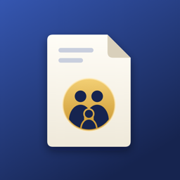

FolkfileSupport
Please don't include document details, like passport or account numbers, in your email. We never need them to help you.
Common questions
Where is my data stored?
Only on your iPhone, encrypted. Folkfile has no account and no server. See the Privacy Policy.
Does Folkfile work without internet?
Yes. Everything works in airplane mode, except buying or restoring the unlock, which goes through the App Store.
Why can't Folkfile read my document automatically?
Reading documents uses Apple Intelligence, which needs a supported iPhone with Apple Intelligence turned on in Settings. You can still add details by hand. Clear, well-lit scans also help, and if text is hard to read, tap the page on the review screen and try another filter, such as Black & White.
How much does Folkfile cost?
You can add up to 5 documents free. After that, a one-time purchase unlocks as many as you like: no subscription, and it's shared with your family through Family Sharing. Everything you've saved always stays available, whether you unlock or not.
I already bought the unlock. How do I get it back?
Tap + to add a document. When the Unlock screen appears, tap Restore Purchase. Use the same Apple Account you bought it with.
Why doesn't Folkfile appear when I share a PDF from Safari?
Safari doesn't always hand the file itself to other apps, and Folkfile never connects to the internet, so it can't download a link. Download the PDF first (touch and hold the link, then tap Download Linked File, or save it to Files), then share it from the Files app.
I got a new iPhone. How do I move my data?
Make a backup in Folkfile (Documents › Backup), AirDrop the backup file to your new iPhone, then open it in Folkfile there and enter your backup password.
Can you recover my data if I delete the app?
Only from a backup file you made. We never have a copy of your data, so we can't recover it for you.